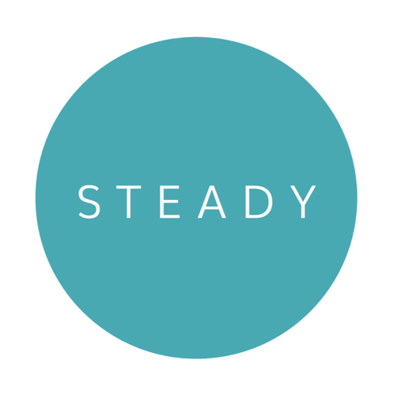
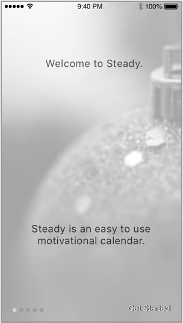
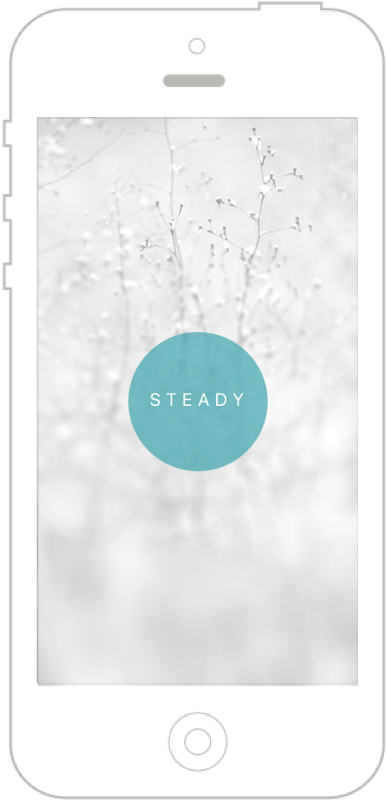

STEADY CALENDAR
Productivity iOS Application
Available in the AppStoreABOUT STEADY CALENDAR
ABOUT
Steady Calendar is a profitable iOS application that has recieved numerous appraisals for its elegant design and intuitive user experience. It was featured on Product Hunt after its launch in 2016.
USER REVIEWS
“I love things that are simple, beautiful and useful - which is exactly what this app is - thank you for such a nice way to track habits”.
“I used the free version for a while but upgraded because I wanted to track more! I love the simplicity, no muss no fuss. Just what I was looking for :)”
“Great app. Really does the job. It is simple with no overwhelming freatures. I just love checking off days - it makes me feel super good about myself. Love the simplicity of use and the minimalistic design. And the new backgrounds are just gorgeous!”
“…like the simple and elegant looks.”
“A fantastic tool. Easy to use with no complex features. Just what I need.”
“Steady helps me see my progress and encourages me not to give up! Really awesome app, super clean and hasn’t crashed on me yet! Customer service is great too.”
CHALLENGE
Steady Calendar is a personal project of Manning Labs. Our team members felt the need to find a good habit tracker tool to keep track of our goals. Some of the habit trackers out there were quite good. Although most were complicated or didn't look inspiring enough. That’s how the idea of creating Steady Calendar came around. The main goal of the design was the simplicity and ease of use of the software. We wanted to create something very simple, with no distractions, that would look beautiful and inspire users to form good habits on a visual and psychological level.
OUR APPROACH
We gave ourselves a deadline - one month - to create a finished product. We started with simply brainstorming ideas and eventually narrowed it down to a few qualities that would characterize our habit tracker best.
Then we did extensive research of the competition as well as the psychology behind forming good habits. The results were extremely interesting and useful.
After all the necessary research was conducted we proceded to creating brand identity for Steady Calendar. First and foremost the app needed a logo. We went through a long process of logo design and considered numerous iterations.
The final logo has a minimalistic, simple and modern feel. It is reminiscent of a mark one uses to color off a day in a calendar. The logo scales well and looks legible in various sizes. The main brand color was put in place too.

After careful consideration the choice of the main fonts fell on a combination of Muli Light and Quicksand. Both of these choices are meant to align with the modern and clean look of the app. The circular letter shapes are serve a purpose of reminding a user of circular shapes that are an important branding element.
After the font choice was finalized, we started working on the user experience of Steady Calendar.Our team started with ideation. Every team member, sketched whatever features they thought our habit tracker would benefit from.
Since the main goal for our app was the simplicity of use, we narrowed down the features to a bare minimum. The final wireframes reflected the very simple UI we had in mind
Now it was time to move on to the actual design of the app. At that stage all our previously conducted extensive research of human psychology, color psychology and habit forming psychology paid off. Before coming up with the final design, we went through numerous iterations and careful testing of the prototype with potential users.

Now that the user experience and the flow of the app was more or less clear to us, we started finalizing the final touches of Steady Calendar’s look and feel. Having analyzed the results of our research in the area of motivational psychology, we realized that people are often motivated by visual triggers. That was the reason why we decided to use various motivational backgrounds in the app.


We also found our that different colors evoke different emotions and reactions in people. That is the reason why we wanted to use bright colors within the app. Both photography and colors are strong visual elements. There was a danger that they would overpower each other. We needed to find an effective way to combine both photography and color, A brilliant solution was found fairly quickly. We decided to use very bright colors against beautiful black and white photography. The choice of colors wasn’t accidental and was based on the psychology of colors.
OUR SOLUTION
What we created as a result was a beautiful, inspiring, simple and easy to use product
The user is able to customize their motivational calendars with colors and images that they find inspiring and that are suitable to the nature of their individual end goals. The choice of colors contributed to making our motivational calendar even more encouraging.
The backgrounds that can be added to calendars establish the emotional connection and help achieve the ultimate goal of the application - help users stay focused, determined and productive.
We made it a point to make the user experience of the application as simple and intuitive as possible without any features that would distract the user from achieving their goals...
